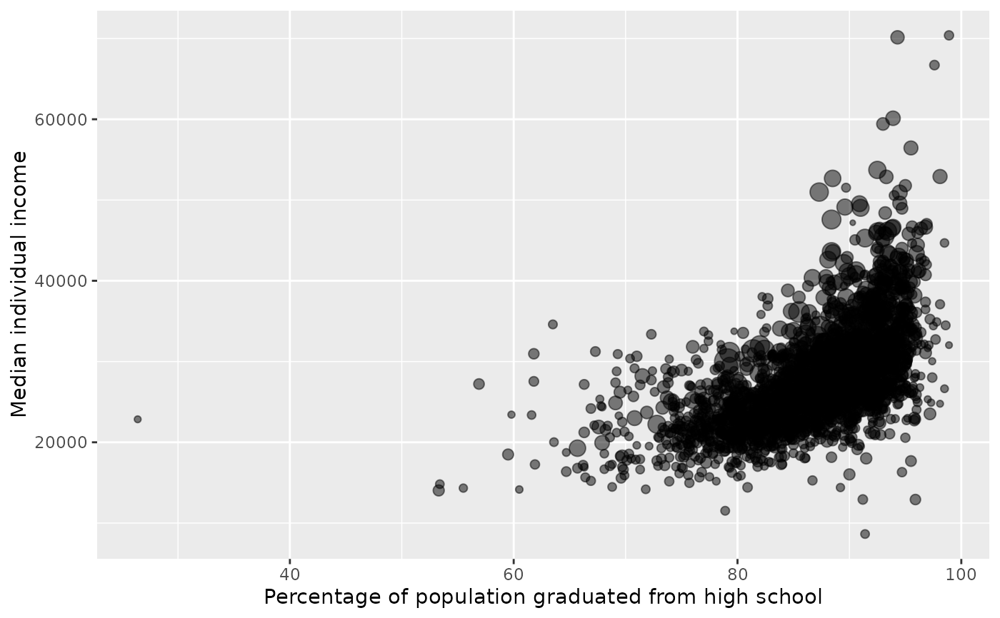

Data for 3142 counties in the United States with many variables of the 2019 American Community Survey.
Format
A data frame with 3142 observations on the following 95 variables.
- state
State.
- name
County name.
- fips
FIPS code.
- median_individual_income
Median individual income (2019).
- median_individual_income_moe
Margin of error for
median_individual_income.- pop
2019 population.
- pop_moe
Margin of error for
pop.- white
Percent of population that is white alone (2015-2019).
- white_moe
Margin of error for
white.- black
Percent of population that is black alone (2015-2019).
- black_moe
Margin of error for
black.- native
Percent of population that is Native American alone (2015-2019).
- native_moe
Margin of error for
native.- asian
Percent of population that is Asian alone (2015-2019).
- asian_moe
Margin of error for
asian.- pac_isl
Percent of population that is Native Hawaiian or other Pacific Islander alone (2015-2019).
- pac_isl_moe
Margin of error for
pac_isl.- other_single_race
Percent of population that is some other race alone (2015-2019).
- other_single_race_moe
Margin of error for
other_single_race.- two_plus_races
Percent of population that is two or more races (2015-2019).
- two_plus_races_moe
Margin of error for
two_plus_races.- hispanic
Percent of population that identifies as Hispanic or Latino (2015-2019).
- hispanic_moe
Margin of error for
hispanic.- white_not_hispanic
Percent of population that is white alone, not Hispanic or Latino (2015-2019).
- white_not_hispanic_moe
Margin of error for
white_not_hispanic.- median_age
Median age (2015-2019).
- median_age_moe
Margin of error for
median_age.- age_under_5
Percent of population under 5 (2015-2019).
- age_under_5_moe
Margin of error for
age_under_5.- age_over_85
Percent of population 85 and over (2015-2019).
- age_over_85_moe
Margin of error for
age_over_85.- age_over_18
Percent of population 18 and over (2015-2019).
- age_over_18_moe
Margin of error for
age_over_18.- age_over_65
Percent of population 65 and over (2015-2019).
- age_over_65_moe
Margin of error for
age_over_65.- mean_work_travel
Mean travel time to work (2015-2019).
- mean_work_travel_moe
Margin of error for
mean_work_travel.- persons_per_household
Persons per household (2015-2019)
- persons_per_household_moe
Margin of error for
persons_per_household.- avg_family_size
Average family size (2015-2019).
- avg_family_size_moe
Margin of error for
avg_family_size.- housing_one_unit_structures
Percent of housing units in 1-unit structures (2015-2019).
- housing_one_unit_structures_moe
Margin of error for
housing_one_unit_structures.- housing_two_unit_structures
Percent of housing units in multi-unit structures (2015-2019).
- housing_two_unit_structures_moe
Margin of error for
housing_two_unit_structures.- housing_mobile_homes
Percent of housing units in mobile homes and other types of units (2015-2019).
- housing_mobile_homes_moe
Margin of error for
housing_mobile_homes.- median_individual_income_age_25plus
Median individual income (2019 dollars, 2015-2019).
- median_individual_income_age_25plus_moe
Margin of error for
median_individual_income_age_25plus.- hs_grad
Percent of population 25 and older that is a high school graduate (2015-2019).
- hs_grad_moe
Margin of error for
hs_grad.- bachelors
Percent of population 25 and older that earned a Bachelor's degree or higher (2015-2019).
- bachelors_moe
Margin of error for
bachelors.- households
Total households (2015-2019).
- households_moe
Margin of error for
households.- households_speak_spanish
Percent of households speaking Spanish (2015-2019).
- households_speak_spanish_moe
Margin of error for
households_speak_spanish.- households_speak_other_indo_euro_lang
Percent of households speaking other Indo-European language (2015-2019).
- households_speak_other_indo_euro_lang_moe
Margin of error for
households_speak_other_indo_euro_lang.- households_speak_asian_or_pac_isl
Percent of households speaking Asian and Pacific Island language (2015-2019).
- households_speak_asian_or_pac_isl_moe
Margin of error for
households_speak_asian_or_pac_isl.- households_speak_other
Percent of households speaking non European or Asian/Pacific Island language (2015-2019).
- households_speak_other_moe
Margin of error for
households_speak_other.- households_speak_limited_english
Percent of limited English-speaking households (2015-2019).
- households_speak_limited_english_moe
Margin of error for
households_speak_limited_english.- poverty
Percent of population below the poverty level (2015-2019).
- poverty_moe
Margin of error for
poverty.- poverty_under_18
Percent of population under 18 below the poverty level (2015-2019).
- poverty_under_18_moe
Margin of error for
poverty_under_18.- poverty_65_and_over
Percent of population 65 and over below the poverty level (2015-2019).
- poverty_65_and_over_moe
Margin of error for
poverty_65_and_over.- mean_household_income
Mean household income (2019 dollars, 2015-2019).
- mean_household_income_moe
Margin of error for
mean_household_income.- per_capita_income
Per capita money income in past 12 months (2019 dollars, 2015-2019).
- per_capita_income_moe
Margin of error for
per_capita_income.- median_household_income
Median household income (2015-2019).
- median_household_income_moe
Margin of error for
median_household_income.- veterans
Percent among civilian population 18 and over that are veterans (2015-2019).
- veterans_moe
Margin of error for
veterans.- unemployment_rate
Unemployment rate among those ages 20-64 (2015-2019).
- unemployment_rate_moe
Margin of error for
unemployment_rate.- uninsured
Percent of civilian noninstitutionalized population that is uninsured (2015-2019).
- uninsured_moe
Margin of error for
uninsured.- uninsured_under_6
Percent of population under 6 years that is uninsured (2015-2019).
- uninsured_under_6_moe
Margin of error for
uninsured_under_6.- uninsured_under_19
Percent of population under 19 that is uninsured (2015-2019).
- uninsured_under_19_moe
Margin of error for
uninsured_under_19.- uninsured_65_and_older
Percent of population 65 and older that is uninsured (2015-2019).
- uninsured_65_and_older_moe
Margin of error for
uninsured_65_and_older.- household_has_computer
Percent of households that have desktop or laptop computer (2015-2019).
- household_has_computer_moe
Margin of error for
household_has_computer.- household_has_smartphone
Percent of households that have smartphone (2015-2019).
- household_has_smartphone_moe
Margin of error for
household_has_smartphone.- household_has_broadband
Percent of households that have broadband internet subscription (2015-2019).
- household_has_broadband_moe
Margin of error for
household_has_broadband.
Examples
library(ggplot2)
ggplot(
county_2019,
aes(
x = hs_grad, y = median_individual_income,
size = sqrt(pop) / 1000
)
) +
geom_point(alpha = 0.5) +
scale_color_discrete(na.translate = FALSE) +
guides(size = FALSE) +
labs(
x = "Percentage of population graduated from high school",
y = "Median individual income"
)
#> Warning: `guides(<scale> = FALSE)` is deprecated. Please use `guides(<scale> = "none")` instead.
